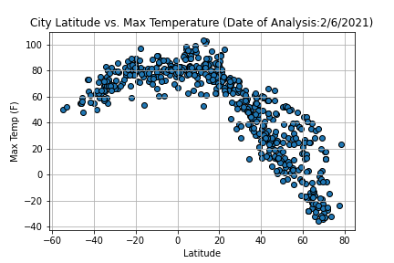

Summary: Latitude vs. X

This project utilized the citypy Python library, the OpenWeatherMap API, to create a representative model of weather across 500+ global cities of varying distance from the equator.
After assembling the dataset, we used Matplotlib to plot various weather factors vs. latitude; weather factors assessed included: temperature (F), humidity (%), cloudiness (%), and wind speed (mph).This site provides the source data for the analysis, visualizations created as part of the analysis, and explanations and descriptions of any trends and correlations.